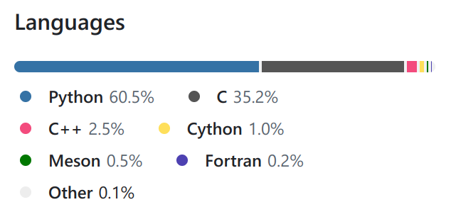
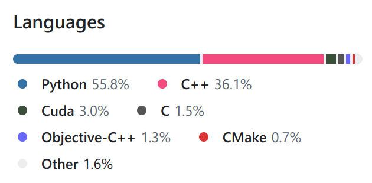

<p style="font-size: 16px; color: #999; margin:5px; position: absolute;"><a href="..">Homepage</a> | <a href="?print-pdf">Printable Version</a></p> <div style="display: flex; justify-content: center; align-items: center; height: 700px;"> <div style="text-align: center; padding: 40px; background-color: white; border: 2px solid rgb(0, 63, 163); border-radius: 20px; box-shadow: 0 0 20px rgba(0,0,0,0.1);"> <h1 style="font-size: 48px; font-weight: bold; margin-bottom: 20px; color: #333;">SI100+ 2024 Lecture iii</h1> <p style="font-size: 24px; color: #666;">不要重复造轮子——AI 工具库</p> <p style="font-size: 16px; color: #999; margin-top: 20px; margin-bottom:5px">SI100+ 2024 Staff | 2024-09-11</p> </div> </div> <!--s--> <div class="middle center"><div style="width: 100%"> # Part.1 理论成立，实践开始 </div></div> <!--v--> ## 理论成立，实践……怎么办？ - 机器学习，就要让机器来，总不能让我手算吧？ <!-- .element: class="fragment" --> - 然而计算机并不能看懂我们的 slides <!-- .element: class="fragment" --> - 计算机对数学的理解也和公式不太一样 <!-- .element: class="fragment" --> - 该写代码了 <!-- .element: class="fragment" --> ```py [] f = open("data.txt", "r") data = f.read() f = open("problem.txt", "r") problem = f.read() model = 按照数据进行训练(data) result = 用训练好的模型求解(problem, model) ``` <!-- .element: class="fragment" --> <!--v--> ## Python 部分都讲啥了 - 基础数据类型——模型的参数、输入、输出 <!-- .element: class="fragment" --> - 运算 & 控制流——模型的训练 <!-- .element: class="fragment" --> - 内置数据结构——数据的存储 <!-- .element: class="fragment" --> Python 中没有“向量”、“矩阵”这些数据类型，但是我们可以自己写啊 <!-- .element: class="fragment" --> ```py [] class Vector: def __init__(self, data): self.data = data v1 = [1, 2, 3] v2 = [4, 5, 6] for i in v1: ... ``` <!-- .element: class="fragment" --> 好麻烦，写了三分钟就不想写了怎么办？ <!-- .element: class="fragment" --> <!--v--> ## 有没有一种可能…… - 已经有人写过了 <!-- .element: class="fragment" --> - 他还写得很好 <!-- .element: class="fragment" --> <li class="fragment"> 还免费让我用<del>居然还有这么好的事</del> </li> - 什么，情报是真的？ <!-- .element: class="fragment" --> </br> <div style="display: flex; justify-content: center;"> <img src="https://numpy.org/images/logo.svg" width="20%" style="display: block; margin: 0 auto;"> <img src="https://pytorch.org/assets/images/logo-icon.svg" width="15%" style="display: block; margin: 0 auto;"> <img src="https://avatars.githubusercontent.com/u/15658638" width="15%" style="display: block; margin: 0 auto;"> <img src="https://matplotlib.org/_static/images/documentation.svg" width="19%" style="display: block; margin: 0 auto;"> </div> <!-- .element: class="fragment" --> </br> 计算机科学的一条定律：有需求就一定有人做 <!-- .element: class="fragment" --> <!--v--> ## Recap: 创建虚拟环境与安装库 你可以使用 Anaconda Navigator 来创建环境和安装库。 <span>~~但是这玩意是真的不好用啊~~</span> <!-- .element: class="fragment" --> 所以我们把如何用命令行来做这些事情也学了吧！ <!-- .element: class="fragment" --> <div class="fragment"> > 如果你使用官网直装的 Python，那就需要用 venv 模块来创建虚拟环境，下面的内容都基于 Anaconda ~~好用就是真理~~ </div> <ul> <li class="fragment"> <code>conda create -n envname python=3.10</code> 创建一个名为 <code>envname</code> 的环境，使用 3.10 版本的 Python </li> <li class="fragment"> <code>conda activate envname</code> 激活 <code>envname</code> 环境 </li> <li class="fragment"> <code>conda install numpy</code> 在当前切换到的环境安装 NumPy </li> <li class="fragment"> 不切换环境的话，就是在默认的 <code>base</code> 环境安装库 </li> <li class="fragment"> 记得要在 VS Code 中选择正确的环境 （看右下角，有显示） </li> </ul> <!--v--> ## Recap: 库的使用 <div class="fragment"> 使用库前要先 `import` ```py [] import numpy ``` </div> <div class="fragment"> `import` 可以加别名，在使用导入的库时，需要加上名称 ```py import numpy as np # 导入 NumPy 库并设定一个别名 np a = np.array([1, 2, 3]) # 这里使用了别名 <div class="middle center"><div style="width: 100%"> # 如果只是 import numpy 的话，就需要写成 numpy.array([1, 2, 3]) </div></div> ``` </div> <div class="fragment"> 可以只导入库中你需要的部分 ```py from numpy import array # 从 NumPy 库中导入 array a = array([1, 2, 3]) # 这样就不需要加上名称了 ``` </div> <!--s--> <div class="middle center"><div style="width: 100%"> # Part.2 更高更快更强 </div></div> <!--v--> ## Python 的能力是有极限的 - 参数好多，数据好多，总之就是多多多多多 <!-- .element: class="fragment" --> <li class="fragment"> <del>众所周知</del>Python 是一门低效率（不完全是）的语言 </li> - 我不做 Python 了，JOJO！ <!-- .element: class="fragment" --> </br> <div class="fragment"> <div style="display: flex; align-items: center; justify-content: center;">   </div> <div style="text-align: center;"> NumPy & PyTorch 所使用的语言比例 </div> </div> <!--v--> ## 如何让计算更快 设想这么一个情景： - 你要帮老师把答题卡上面的名字封起来，装订成一册 <!-- .element: class="fragment" --> <li class="fragment"> 但是同学们把名字写在答题卡的不同位置，答题卡大小也不一样<del>当然现实中学校不会这样</del>，你需要花很长时间把写名字的地方对齐 </li> - 但是另一个考场的同学们把名字写在同一个位置，并且使用相同规格的答题卡 <!-- .element: class="fragment" --> - 这下简单了，直接把所有答题卡叠在一起，就可以一次性装订 <!-- .element: class="fragment" --> </br> <div class="fragment"> 在计算任务上，这种比较“规整”的情况就给了我们优化的空间 - 不是 Python 的无范围限制的 `int`，而是内存中连续的，每个元素大小相同的 32 位有符号整数等机器原生数据类型 - 更整齐的内存布局，更快的循环遍历速度 - 其他~~我们不需要了解的~~优化技术，例如 SIMD - 其实上面的优化技术我们也不需要了解 </div> <!--v--> ## 我应该用这些库吗？ - Python 和库都是合理的抽象与封装 <!-- .element: class="fragment" --> - 如果你不是要写这些库，那为什么要费劲去了解这些库的实现 <!-- .element: class="fragment" --> - 说得极端点，如果你连库都不用，那干脆直接写二进制机器码 <!-- .element: class="fragment" --> <li class="fragment"> <del>有些非常讲究的说法会让你深入了解底层实现，但这真的必要吗？</del> </li> - 抽象是不断被摧毁又不断被建立的（e.g. Process 是计算机资源隔离的抽象，但是真的在做优化时不能不考虑别的程序在运行这个事实） <!-- .element: class="fragment" --> - 每次都把披萨说成“不就是一张饼加了点小料”并不会让你更懂怎么做披萨 <!-- .element: class="fragment" --> <li class="fragment"> “为什么在 Python 交互式环境里面，输入 <code>"abc"</code> 会得到 <code>'abc'</code>？” </li> - 容易陷入抽象泄露的陷阱，总之以后你们会明白的 <!-- .element: class="fragment" --> </br> - 学习不只是通过了解“为什么”来进行的，更多的是“怎么做” <!-- .element: class="fragment" --> - 读范文和名著比读《现代汉语》教科书对写高考作文的帮助更大 <!-- .element: class="fragment" --> - 不要重复发明轮子，无需总是去了解轮子是怎么造的 <!-- .element: class="fragment" --> <!--s--> <div class="middle center"><div style="width: 100%"> # Part.3 NumPy </div></div> <!--v--> ## <!--s--> <div class="middle center"><div style="width: 100%"> # Part.4 PyTorch </div></div> <!--v--> ## 看起来 NumPy 已经够用了？ <!--v--> ## 你的单核性能比较松弛，但是你的核心数弥补了这一部分 - 大家应该都听说过 AI 训练把 GPU 价格炒得多么高的事情 <!-- .element: class="fragment" --> <li class="fragment"> <del>还有诸如 H100、A100 禁售之类的事情</del> </li> <!--s--> ## Takeaway Message <!--s--> <div style="display: flex; justify-content: center; align-items: center; height: 700px; "> <div style="text-align: center; padding: 40px; background-color: white; border-radius: 20px; box-shadow: 0 0 20px rgba(0,0,0,0.1);"> <div style="display: inline-block; padding: 20px 40px; border-radius: 10 px; margin-bottom: 20px;"> <h1 style="font-size: 48px; font-weight: bold; margin: 0; color: rgb(16, 33, 89)">Thanks for Listening</h1> </div> <p style="font-size: 24px; color: #666; margin: 0;">Any questions?</p> </div> </div>